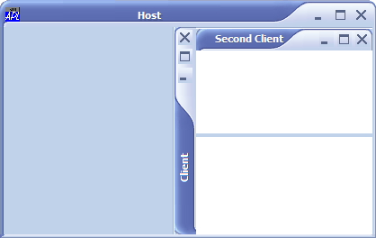

Windows Native Look and Feel is an optional feature of Windows XP and other advanced versions of Windows.
Under XP, it may be enabled from the Appearance tab of the Display Properties dialog box, by choosing Windows XP style.
If Native Look and Feel is enabled, APL will optionally display the title bars of docked windows using the appropriate Native style. You can control this behaviour using the XPLookAndFeelDocker parameter (see User Guide, Chapter 2).
If XPLookAndFeelDocker is 1, APL will display docked window title bars using the appropriate XP style. If XPLookAndFeelDocker is 0 (the default), it will not.
The picture below illustrates how the first example in this chapter appears when Native Look and Feel is enabled, XPLookAndFeelDocker is 1, and a special Windows XP Theme is in use.
